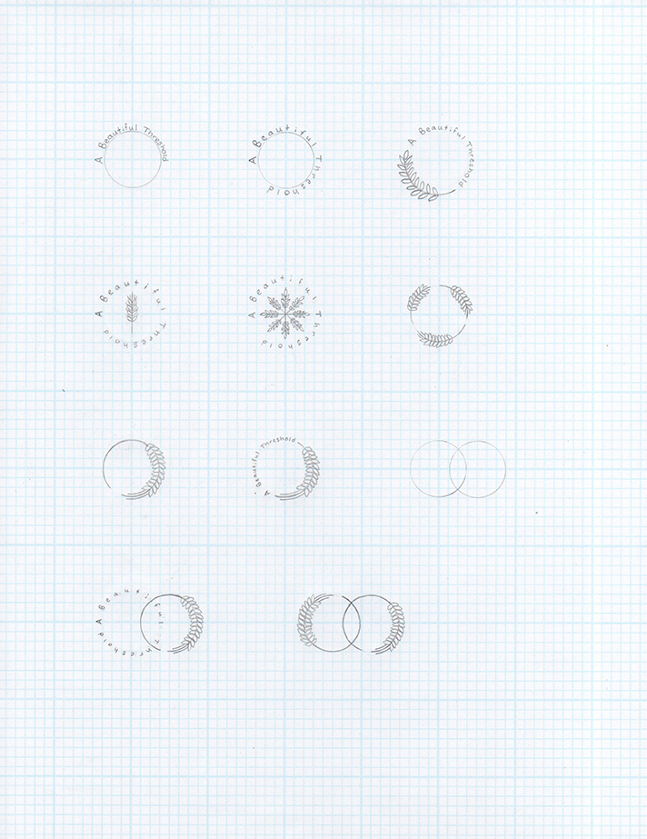

Capstone Project Page
A Beautiful Threshold
A Beautiful Threshold brings the true meaning of beauty to light by reflecting on an outward act of love that saved my mother’s life from cancer in 2016 to affirm that the knowledge and pursuit of beauty is essential for our well-being and the answer to the question of how one lives a meaningful life.
Background
In the spring of 2015, I had the privilege to take a course during my undergraduate studies in the Wisconsin School of Business at the University of Wisconsin–Madison on beauty. This course titled Aesthetics in Business: Approaching Beauty was taught only this one semester by visiting artist and lecturer Diane Ragsdale.
The primary goal for teaching a course on beauty in the Wisconsin School of Business was to produce “wiser, more responsible leaders” with “moral imagination” to address the problems faced by the world today.55 Most of the ideas and research presented on this website come from what I learned in this class as well as what I learned in my own life after the class. Aesthetics in Business: Approaching Beauty changed my life for the better because the course provided me with clarity to answer the challenging question I had on my heart and mind at the time: ‘How does one live a meaningful life?’ The root of this question is about becoming, being, and transcendence,56 which I understand are lifelong pursuits shaped by every individual’s unique life experiences.
Shortly after graduating from the University of Wisconsin–Madison and returning home to the Twin Cities in December 2015, my mother was diagnosed with Acute Myeloid Leukemia (AML) in February 2016. In July of the same year, my mother received stem cells donated by her sister (my aunt) through a bone marrow transplant performed at the Mayo Clinic in Rochester. As a result of this transplant, my mother survived and has remained in remission since November 2016.
I am so grateful to my mother’s sister who was a perfect match and donated her stem cells for the transplant. I am also thankful for the care provided by family, friends, and the staff at Methodist Hospital in St. Louis Park and the Cancer Center at the Mayo Clinic. It is a blessing that my mom is healthy and still here.
This heart-wrenching experience confirmed for me what I had learned in Aesthetics in Business: Approaching Beauty because it dawned on me that the donation of stem cells by my mother’s sister to perform the bone marrow transplant exhibits many of the attributes that scholars define as the experience of beauty. Namely, the attributes of symmetry, a selfless mind, desire for creation,57 and the crossing of a threshold.58 My mother’s transplant experience is exemplary for how I want people to understand and think about beauty.
Therefore, A Beautiful Threshold addresses the design challenge of educating the public about the need for true beauty in hopes that others would choose to pursue beauty in their own lives. By shining a light on the true meaning of beauty that is often overshadowed by imitations that fail to fully enliven the human spirit, my hope is to shift one’s perspective and understanding of beauty so they may have discernment and courage to accept its invitation when it calls.
Research
To solve this design challenge, I began searching for an underlying connection between my collection of visual inspiration, beauty, threshing, threshing floors, and the bone marrow transplant.
My unexpected discovery of O’Donohue’s definition of blessing at the back of his book To Bless the Space Between Us: A Book of Blessings enabled me to realize that the through line in these subjects were circles.59
A sphere is a form of beauty and fairness because it is equidistant in all directions,60 and threshing floors and stem cells are circular as well. More importantly, circles represent blessing, constant renewal, and regeneration.61
Also, I found that the medical language describing the bone marrow transplant process uses terminology related to agriculture, such as engraft, harvest, and transplant.62
Arriving at a Solution
The idea to create an art and design installation inspired by the beauty of my mother’s transplant experience that extends across the skyway of MCAD has been in the back of my mind since the summer of 2017.
The solution to my design challenge included two parts.
First, if the installation is about the beauty of my mother’s transplant experience, the installation should exhibit those attributes of the true meaning of beauty as defined by the scholars referenced in my project.
Second, most people do not associate beauty with symmetry, a selfless mind, desire for creation,63 the crossing of a threshold,64 or donation and transplantation. As a result, I also needed to educate the public about this view of beauty, so I chose to do so through the design of this website.
The art and design installation is intended to interrupt one’s routine crossing of the skyway,65 capture interest, and hopefully guide the viewer to this website where they can have their own revelation about its meaning.
Summary
Finally, what I learned from this project is the importance of accepting my limitations and setting realistic, achievable goals because pursuing the subject of beauty as it relates to how one lives a meaningful life is no easy task.
In time, this project has the opportunity to grow into something more through the partnership with organizations that fight life-threatening blood cancers through transplantation.
Nevertheless, my hope is that this project honors my mom’s story and touches the life of anyone who needs this information right now. We all want to live a meaningful life, and I cannot think of anything else worth pursuing more than beauty.
Process
Sketches
Thorough research and the collection of visual inspiration informed my ideas for the components of the skyway installation and the simple structure of the website design.
Installation Sketches
Logo and Website Sketches
Inspired by the blessings written by O’Donohue, I wrote my own three-part blessing for this project. Originally, a typographic animation of this blessing was going to be projected onto the floor of the skyway at night (see below), but the physical limitation of the height of the skyway ceiling made the projection too small and illegible.
Each part of the blessing is printed onto the sticker label of the three blood donor bags featured in the skyway installation instead.
Final Deliverables
Typography
The typeface Optima was chosen for the identity of A Beautiful Threshold. I selected Optima because Hermann Zapf designed the letterforms in the proportions of the Golden Ratio,66 which is a mathematical ratio that recurs in the appearance of things in nature that are considered beautiful.67
Color Palette
The logo design for A Beautiful Threshold is black and turquoise because these were the colors of the handkerchief my mother wore after her chemotherapy and during her transplant and recovery.
The light blue comes from the color of hospital gowns while the deep magenta is inspired by the color of stem cells under a microscope.68
Applying the multiply effect to the crossing or overlapping of the primary colors produced new secondary colors in a process that symbolically reflected the concepts expressed by this project.
Final Logo Design and Icon
The final logo design for A Beautiful Threshold features the joining (or multiplication) of two circles whose intersecting form reminded me of the shape of a wheat grain. This shape was used to create an abstract icon that resembled wheat chaff falling from the grain or a flower blooming, both symbolic of renewal.
The second logo iteration was selected based on aesthetic preference once I realized the icon could fit in the logo mark once overlapped. This reminded me of Scarry’s etymological explanation of the word fairness as it relates to justice originating from its use in aesthetics as “perfection of fit,”69 similar to the way my mom and her sister were a 10/10-match on all HLA markers for the bone marrow transplant.70